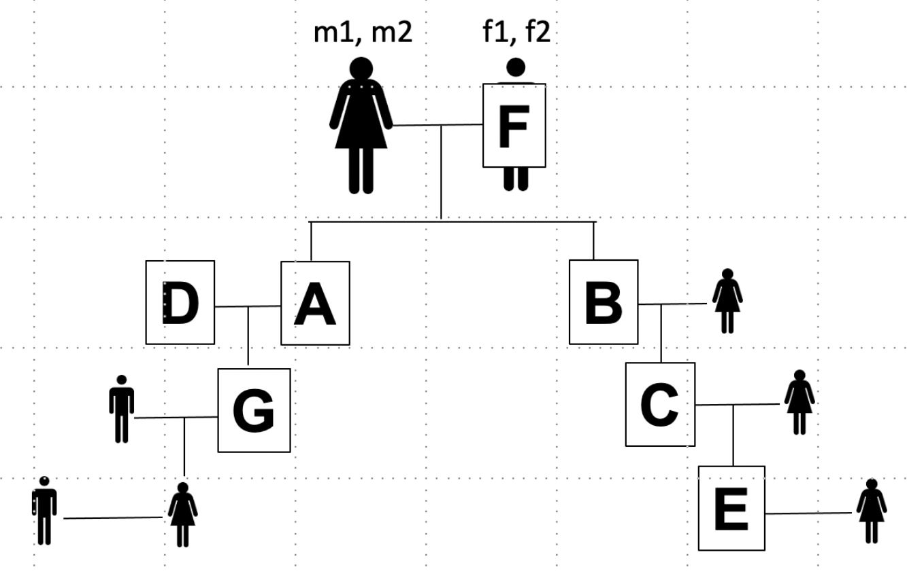

5.2 Expected IBD of close relatives#
Different relationships will show characteristic percentages of their genomes shared at IBD=0, 1, or 2. The table below summarizes some of those relationships. In the sections below, we work out how you could derive some of these.
Summary of IBD sharing#
Relationship |
%IBD=2 |
%IBD=1 |
%IBD=0 |
|---|---|---|---|
Identical twins |
1 |
0 |
0 |
Full siblings |
0.25 |
0.50 |
0.25 |
Parent-child |
0 |
1 |
0 |
Half siblings |
0 |
0.5 |
0.5 |
Grandparent/grandchild |
0 |
0.5 |
0.5 |
Avuncular |
0 |
0.5 |
0.5 |
First cousins |
0 |
0.25 |
0.75 |
Unrelated |
0 |
0 |
1 |
Consider the following pedigree:

Let \(m_1\), \(m_2\), \(f_1\), and \(f_2\) be the names of the chromosomes of the grandparents of the pedigree. Below we show how to estimate the percent of the genome that will be shared for different relative pairs.
Note, when doing so, we will compute the probability that any particular region of the genome will be shared at IBD=0, 1, or 2. This will be equal to the total percent of the genome we expect to be shared at these IBD levels, since we can think about each region of the genome independently. Therefore, we will be able to ignore recombination when computing these percentages.
Siblings (A and B)#
Let:
\(S\) be the set of possible child chromosomes (\(S \in \{(m_1, f_1), (m_1, f_2), (m_2, f_1), (m_2, f_2)\})\)
\(IBD(a,b)\) be the IBD sharing of chromosome combinations \(a\) and \(b\). e.g.:
\(IBD((m_1, f_1), (m_1, f_2)) = 1\)
\(IBD((m_2, f_1), (m_1, f_2)) = 0\)
etc.
Then we can compute the probability that \(A\) and \(B\) share a segment at \(IBD=i\):
Any of the four combinations in \(S\) are equally likely in each sibling, so \(P(A=a)\) and \(P(B=b)\) will both be 0.25 in all cases.
For \(P(IBD[A,B]=0)\), the following combinations have IBD=0:
\((m_1, f_1), (m_2, f_2)\)
\((m_1, f_2), (m_2, f_1)\)
\((m_2, f_1), (m_1, f_2)\)
\((m_2, f_2), (m_1, f_1)\)
So we get \(P(IBD[A,B]=0) = 4*0.25*0.25 = 0.25\).
Similarly for \(P(IBD[A,B]=2)\) you can come up with four different combinations that give IBD=2:
\((m_1, f_1), (m_1, f_1)\)
\((m_1, f_2), (m_1, f_2)\)
\((m_2, f_1), (m_2, f_1)\)
\((m_2, f_2), (m_2, f_2)\)
and similarly get \(P(IBD[A,B]=2) = 4*0.25*0.25 = 0.25\).
You can follow the same procedure (or just subtract \(1-P(IBD=0)-P(IBD=2))\) to come up with \(P(IBD[A,B]=1)=0.5\).
To summarize, for siblings with the %IBD=0, 1, 2 is 0.25, 0.5, 0.25.
Parent-child (F and B)#
Similar to in the above let:
\(S\) be the set of possible child chromosomes (\(S \in \{(m_1, f_1), (m_1, f_2), (m_2, f_1), (m_2, f_2)\})\)
\(F\) be the set of possible father (paternal) chromosome combinations (\(F \in \{(f_1, f_2)\}\)) (there is only one possibility here)
\(IBD(a,b)\) is defined the same as above.
Then:
Since there is only one possible father combination ((\(f_1,f_2\)) with probability 1), \(P(F=f)\) is always 1 here. As in the above case, any of the four combinations in \(S\) are equally likely, so \(P(B=b)\) will be 0.25 in all cases. We can simplify to:
Further, all four possible child chromosome combinations in \(S\) have IBD of 1 with the father. So we have:
\(P(IBD[F,B]=1) = 4(0.25) = 1\)
\(P(IBD[F,B]=0) = 0\)
\(P(IBD[F,B]=2) = 0\)
Grandparent/grandchild (F and C)#
We can use a similar concept as above:
The grandparent (\(F\)) has only one possible combination (\(f_1,f_2\)) with probability 1.
Let \(U=(u_1,u_2)\) denote the chromosomes of the unrelated parent of the grandchild (the one not descended from F).
The grandchild (\(C\)) will have the following possible combinations with equal probability (you can work this out if you assume the father, \(B\), has each possible combination in \(S\) with equal probability):
So the above simplifies to:
There are no combinations in \(C\) that give IBD=2 with \(F\), so \(P(IBD[F,C]=2)=0\)
There are 4 combinations that give IBD=1, so \(P(IBD[F,C]=1) = 4(0.125) = 0.5\)
There are 4 combinations that give IBD=0, so \(P(IBD[F,C]=0) = 4(0.125) = 0.5\)
Avuncular (A and C)#
\(A\) will have any of the following chromosome combinations with equal probability: (\(S \in \{(m_1, f_1), (m_1, f_2), (m_2, f_1), (m_2, f_2)\}\))
See above for the 8 possible combinations \(C\) could have.
So our equation above will simplify to:
We can tell right away none of the possible combinations have IBD=2.
There are 16 combinations that will give IBD=1:
\(A=(m_1,f_1), C=(m_1,u_1)\)
\(A=(m_1,f_1), C=(m_1,u_2)\)
\(A=(m_1,f_1), C=(f_1,u_1)\)
\(A=(m_1,f_1), C=(f_1,u_2)\)
\(A=(m_2,f_1), C=(m_2,u_1)\)
\(A=(m_2,f_1), C=(m_2,u_2)\)
\(A=(m_2,f_1), C=(f_1,u_1)\)
\(A=(m_2,f_1), C=(f_1,u_2)\)
\(A=(m_1,f_2), C=(m_1,u_1)\)
\(A=(m_1,f_2), C=(m_1,u_2)\)
\(A=(m_1,f_2), C=(f_2,u_1)\)
\(A=(m_1,f_2), C=(f_2,u_2)\)
\(A=(m_2,f_2), C=(m_2,u_1)\)
\(A=(m_2,f_2), C=(m_2,u_2)\)
\(A=(m_2,f_2), C=(f_2,u_1)\)
\(A=(m_2,f_2), C=(f_2,u_2)\)
so we have \(P(IBD[A,C]=1)=16(0.25)=0.5\). Similarly you can get \(P(IBD[A,C]=0)=0.5\).
Greatgrandparent/greatgrandchild (F and E)#
Eventually, it becomes cumbersome to write down all those combinations, but we could use the same method as above. Instead we will describe the following examples using intuition.
First, we know IBD=2 will always have 0 probability in this case, since E has one parent unrelated to F. So we really have to just decide about IBD1 vs. IBD0.
We know that the child (B) will inherit one chromosome from F. The grandchild (C) will inherit that chromosome with 50% probability. If C gets a chromosome from F, they will pass it on to the greatgrandchild (E) with 50% probability.
So P(IBD=1) is 0.5(0.5) = 0.25 and P(IBD=0) = 1-0.25 = 0.75
We could extend this to great-great-grandchild to get P(IBD=1) = \(0.5*0.5*0.5\) = 0.125 and so on.
First cousins (G and C) (and beyond)#
Again we will use intuition for this one. Each grandchild will inherit one of the four grandparent chromosomes. There is a 25% chance it will be the same one. So P(IBD=1)=0.25.
If we wanted to do G and E: G will inherit one of the four grandparent chromosomes C will inherit one of the four grandparent chromosomes with 50% chance. There is a 25% chance it will be the same one
So: P(IBD=1) = 0.5(0.25)=0.125
Each subsequent generation, each copy of the grandparent chromosomes will be lost with 50% probability. So we can get the probability that \(n\)th cousins share a segment IBD=1 is \(\frac{1}{2^{2n}}\).